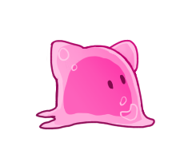
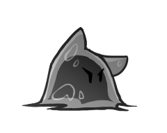
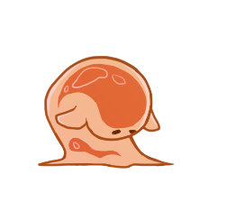
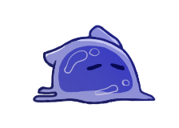
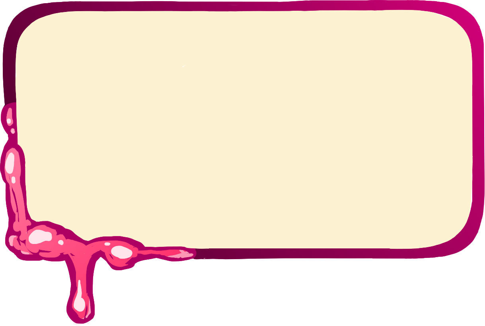

To browse pages of the user manual click buttons on the left and right sides
1) To launch the game open "Index.html" file
2) Then load Levels.json file using button on the screen
3) In the settings turn on the fullscreen or adjust the scale of the page to your liking
(fullscreen with 100% scale recommended)
In the settings you can adjust volume of music and sounds
as well as ticks per second setting
(60 recommended, but if you experience lags you can try lowering it).
You can also reset your progress here.
To start the level you need to press "Play" button and choose the level
(there are 10 levels in the game)
On the level you can choose cats and place them on the field, but it costs hearts.
Your goal is to defeat all candies and prevent them from reaching the left side of the field
To browse pages of the user manual click buttons on the left and right sides

— heart cat. This cat generates hearts which can be used to buy other cats.

— angry cat. This cat shoots enemies.
— buff cat. This cat buffs other cats, so they can work twice as fast.

— shield cat. This cat is very tough and can attack enemies near him.

— lazy cat. This cat shoots enemies and slows them down.
— simple candy. This enemy will try to reach the left side of the field
destoying cats on its way.
— wrapped candy. A simple candy in a shielding wrapper.
— fast candy. This candy is slow at first, but the less health it has the faster it is.
If you have a hard time finishing levels, you can instantly win by pressing "W"
